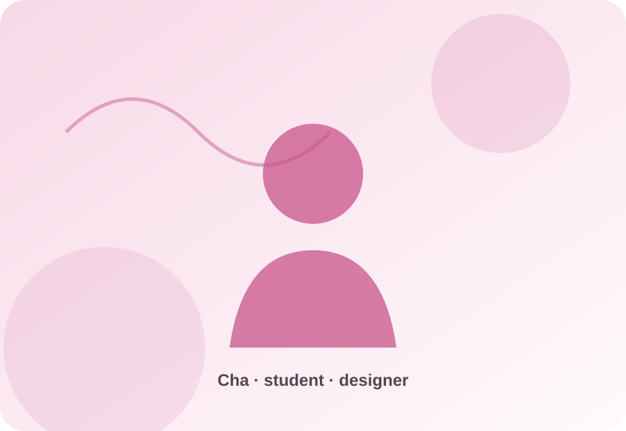
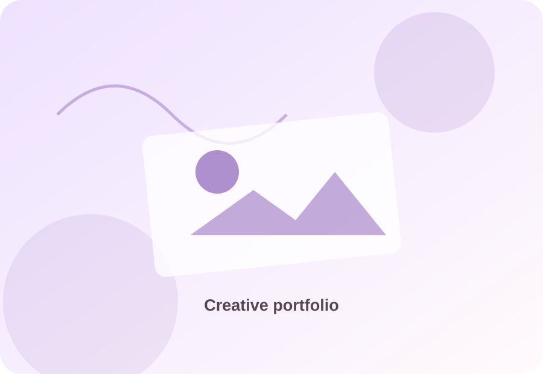
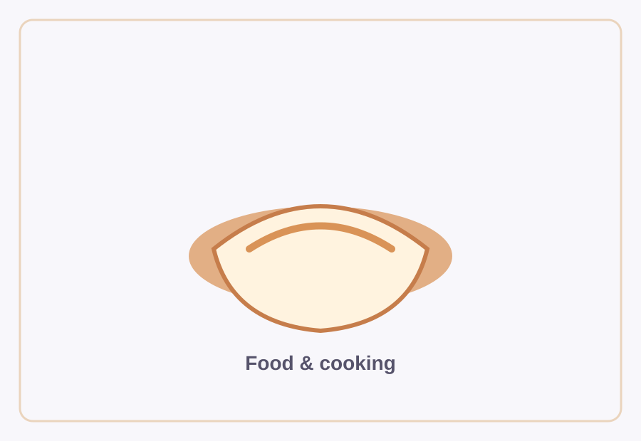
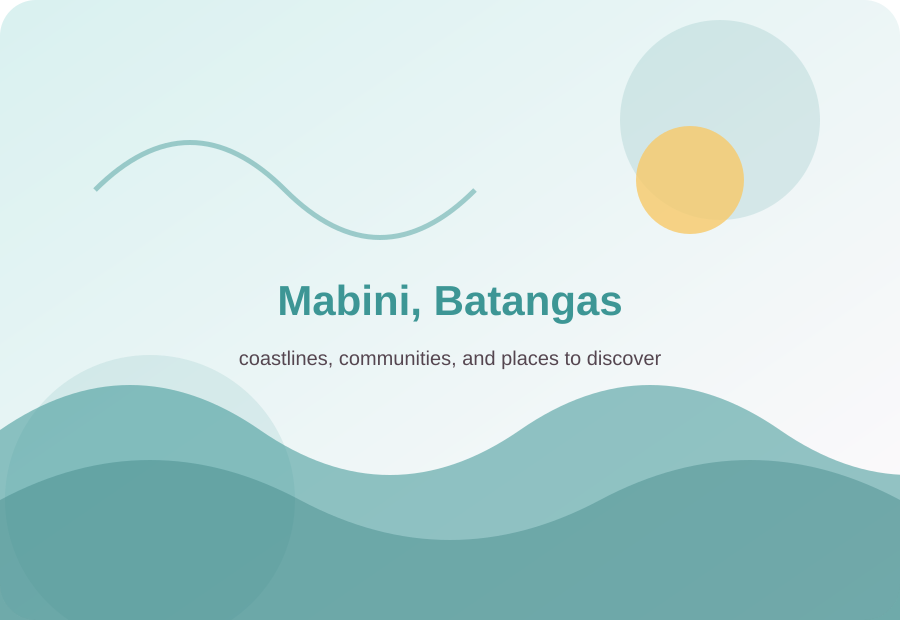
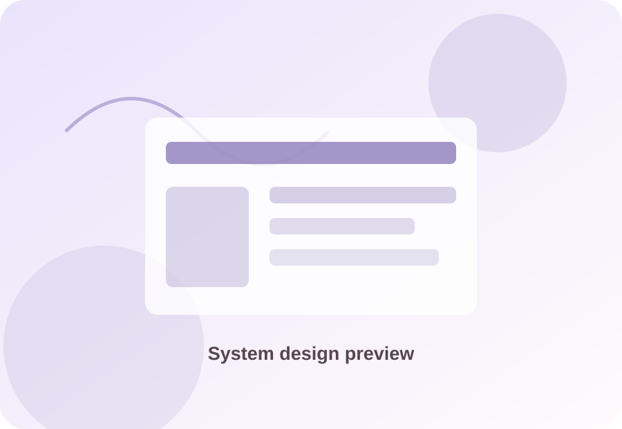

Design & making
I enjoy creating certificates, tarpaulins, publication materials, and digital layouts. I like bringing scattered ideas together into something clear and eye-catching.
A little more about the person behind the work
Hi, I’m Cha — a BSIT student specializing in Business Analytics at Batangas State University – The National Engineering University, Mabini Campus. I enjoy learning how technology can solve everyday problems, but I also make room for the creative things that feel like me.
View my resume
The person, not just the student
I’m naturally curious and I like having different ways to express an idea. Some days that means working on a website or exploring a system concept; other days it means arranging a design, writing something, or trying a recipe.
I’m still learning, and that’s part of the process I value. I want to keep improving my technical skills while holding on to the creative side of me that enjoys making things useful, thoughtful, and visually pleasing.
Little snapshots
Add your own photos by replacing the image paths below. The gallery is designed for at least five pictures.




Outside of class and projects
I enjoy creating certificates, tarpaulins, publication materials, and digital layouts. I like bringing scattered ideas together into something clear and eye-catching.
Pop music and OPM are regular parts of my day. I also enjoy writing essays, poems, and feature-style pieces whenever inspiration strikes.
Making food is both a hobby and a creative outlet for me. I’m interested in the small-business side of preparing things people can enjoy, too.
I enjoy binge-watching, playing games, and taking a break with the things I love. Having different interests helps me recharge and return to my work with fresh ideas.
Where I come from
Mabini is an important part of my story. I wanted this portfolio to include a small guide to the community, its local food, places to stay, marine attractions, nature spots, and culture.
The guide is intended to help visitors discover more about the municipality and explore local businesses and attractions. It is informational, rather than a personal travel diary.
Explore Discover MabiniStill becoming
I’m working toward becoming more confident in technology, analysis, design, and the ideas I choose to pursue.